Introduction
- height:500px
- About this course
- Evaluation & grading
- Course format
- Core topics
- Key principles
- Expectations

About this course
Welcome! I'm Julien Dauliac, a Site Reliability Engineer (SRE), it's like DevOps.
I have a background in software architecture and enjoy development in general.
My favorite technologies include Nix, Kubernetes, and Rust, and I take a strong stance in advocating for efficient and modern software practices.
My courses are structured but adaptable.
I frequently adjust the content based on my mood, your questions, and the interests of the group.
If a topic excites you, feel free to ask.
I am happy to form smaller breakout groups to dive deeper.
I am opinionated and proselytizing about good software practices.
All course materials are available on GitHub: https://github.com/Dauliac/Cours
My CV is also available here: https://github.com/Dauliac/resume
Evaluation & grading
You will be graded on the project in collaboration with Alan, but based on different criteria:
Fields:
- Build System
5pt - CI/CD or test environment
5pt - Supply Chain Security
5pt - Project documentation
5pt
Scoring:
- Code quality
2pt - It Works
2pt - Presentation
1pt
Course format
- Formal Lessons: Structured content that will be adapted as needed.
- Interactive Sessions: Q&A and real-world case studies.
- Breakout Groups: If you have a particular interest, I can take smaller groups aside to dive deeper into specific topics.
- Hands-on Practice: Practical work will be emphasized throughout the course.
Core topics
- Software Delivery Life Cycle (SDLC): Key methodologies and industry best practices.
- Operating Systems: Understanding how systems work under the hood.
- Licensing Models: Exploring software licenses and their implications.
- Technical Documentation: Writing clear and effective documentation.
Key principles
- Automation: Leveraging CI/CD and modern infrastructure tools.
- Security: Ensuring a robust software supply chain.
- Efficiency: Writing scalable and maintainable code.
- Open Source: Advocating and contributing to open-source projects.
Expectations
- Engagement: Participation in discussions and hands-on sessions.
- Curiosity: Asking questions and exploring beyond the course content.
Software Delivery Life Cycle
Module Objective
- Cover software delivery life cycle methods
- Understand the importance of CI/CD
- Measure the performance of CI/CD
- Learn basic CI/CD architectures
- Know how to code a basic CI/CD
Definitions
Software Delivery Life Cycle
SDLC (Software Development Life Cycle) is a process that enables the production of high-quality software at the lowest cost within the shortest time frame.
In French: Cycle de développement logiciel
Framework
- Agile
- DevOps
CI
Continuous Integration (CI) involves regularly and automatically integrating developers' source code into a shared repository. Each code modification triggers automated tests to detect errors as early as possible.
- Test automation
- Supply chain automation
- Code review automation
Supply Chain
Code used to build software
CD
In Continuous Delivery, versions are ready to be deployed but aren't deployed automatically.
- Automation of delivery
- Automation of deployment
A picture is worth a thousand words:
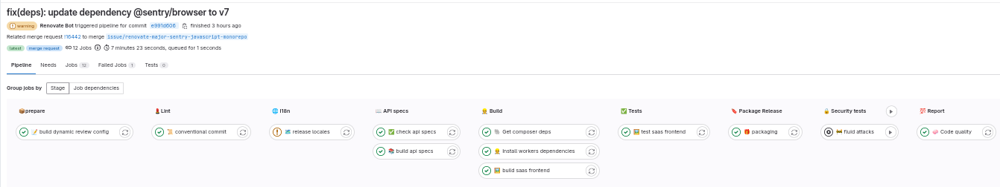
5W
| What | CI/CD is an approach for automating software development processes. |
|---|---|
| Who | It involves developers, testers, and automated tools. |
| Where | It can be used in any development environment. |
| When | It's applied throughout the development cycle. |
| How | It automates compilation, testing, deployment, and feedback management. |
| Why | It aims to improve quality, accelerate development, reduce errors, foster collaboration, and enable frequent deployments. |
Also
- Automate labor:
#DEVOPS🌻 - Achieve economies of scale 🪜
- Reduce stress 🧘♂️
Entities
- Culture: DevOps
- Agile management: Release train
- Code: Software Development Life Cycle
- Platform:
- Software forge (GitLab or others)
- CD Platform
- Craftsmanship:
Humans + Tools = 🤟
DEVOPS 💓 CICD
- A deeply DevOps practice
- Automate labor: #DEVOPS 🌻
- Collective management of non-functional aspects
- Test everything that can be tested
Non-functional aspects
- A specification: RFC ISO 25 010
- ISTQB
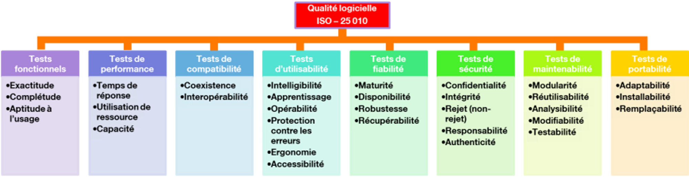
Key Performance Indicators (KPI)
It doesn’t work, it’s too slow, it’s broken.
- Managers don’t always know what's best for non-functional aspects.
- An alternative to non-factual directives.
- ⚠️ KPI can become a tool for team pressure: Data isn't facts, and facts aren't goals.
My Favorite KPI 🔑
- Automation factor
- Technical debt
- Code coverage
- CVE rate
- Automated test failure rate
DORA Metrics
- Deployment frequency
- Change execution delay
- Mean time to recovery
- Change failure rate
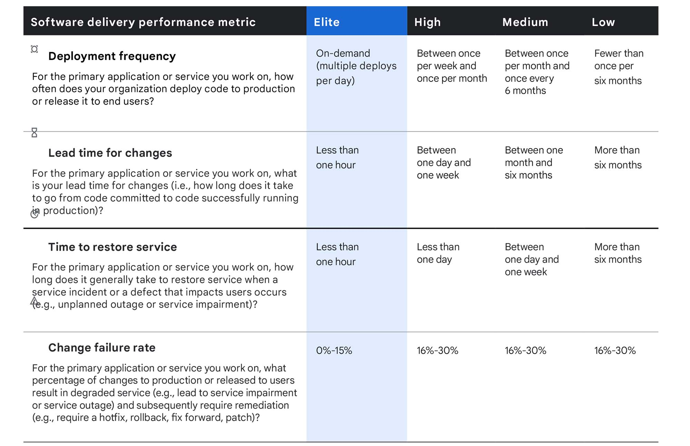
CI/CD Architecture 🏗️
CI/CD Geography 🗺️
- Local to your development machine (on Linux or other OS)
- Software forge: GitLab and others…
- External tools: SonarQube, Argo-CD,
CI/CD Timeline 🕐
Software Development Life Cycle (SDLC)
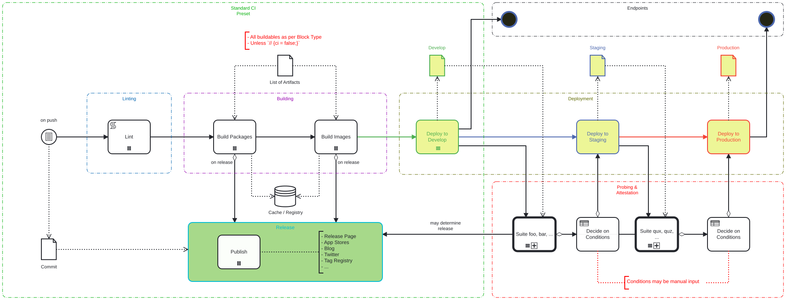
CI/CD 10000ft flight height - The Standard Documentation
4 Steps

- Linting: The linting phase ensures that the codebase is in good shape. This may include checking formatting, style, and auto-generated code.
- Building:
Builds should adhere to these properties:
- idempotence
- efficiency
- speed
- Deployment:
-
Tool Method Description ansible⬇️ Code and operations are sent to production from a client machine using SSH. fluxCD⬆️ The fluxCDserver listens to your software forge to pull updates.
-
- Remote runner VS Inplace runner
Monorepo vs Polyrepo
- The organization of repositories is a crucial aspect of CI/CD.
- Splitting or not splitting projects will determine the ease of adopting tools and practices…
Polyrepo
- Advantages:
- Isolation and independence between projects.
- Easier management of individual repositories.
- Improved performance and scalability, but more complex maintenance.
- Disadvantages:
- Harder project coordination.
- Risk of inconsistency and divergence.
- Tedious maintenance with multiple repositories.
Monorepo
- Advantages:
- Easier collaboration and code sharing.
- Centralized version and security management.
- Unified dependency management.
- Disadvantages:
- Frequent merge conflicts and complex dependencies.
- Errors in one project can impact the entire system.
- More complex management as it scales.
How to split?
- Team topology
- Projects should mirror teams:
- If CI/CD is a shared responsibility ➡️ Monorepo
- If each team has its own DevOps (developers or SRE, OPS) ➡️ Polyrepo
- Projects should mirror teams:
And for CI/CD
- Monorepo for CI/CD:

Systems Course
Introduction
Objectives
- Understand the system boot process, from BIOS initialization to kernel execution.
- Gain foundational knowledge of operating system architectures.
- Explore different forms of isolation, including virtual machines, containers, and lambdas, and understand their advantages and disadvantages.
What's an OS?
What does an OS offer?
- Do I need one?
- Not necessarily, but if it's a personal computer (PC), it’s better.
- Why?
- To abstract the hardware.
A Simple System to Start
-
BIOS
-
Kernel booted by BIOS
-
Creation of process 0 by the kernel
-
IDLE = process that does nothing:
while(true) {}
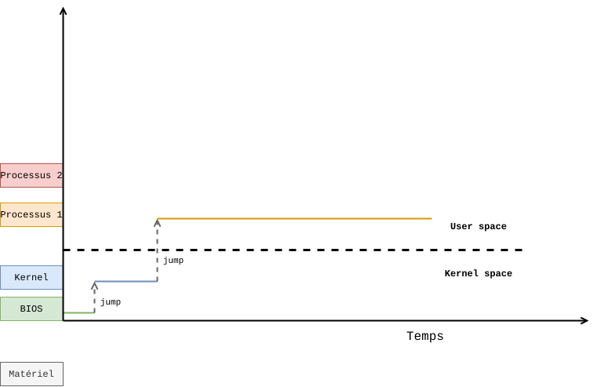
BIOS
- Fun fact: 🍎 The Mac startup sound comes from an illegal sample from The Beatles’ Sgt. Pepper’s Lonely Hearts Club Band album.
Hard BIOS
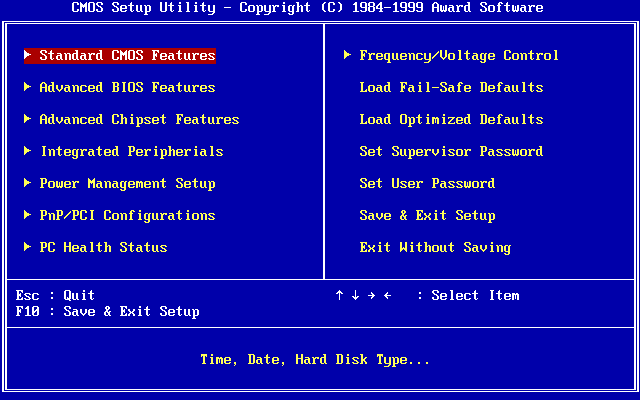
Corporate BIOS
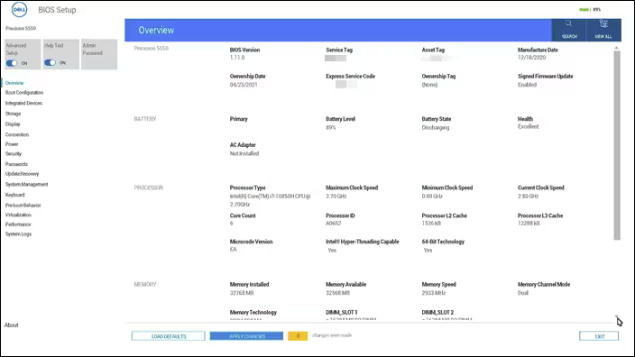
Casual BIOS
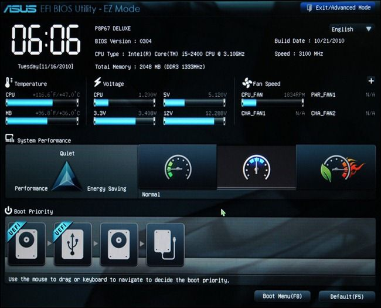
What's a BIOS?
- The first instruction executed by the processor
- Detects and initializes hardware:
- Processors, memory, I/O controllers, peripherals, etc.
- Hardware configuration
- Boots the operating system
- Old term
A Common Misnomer
- Extensible Firmware Interface → INTEL
- Unified Extensible Firmware Interface → AMD, American Megatrends, Apple, ARM, Dell, HP, Intel, IBM, Insyde Software, Microsoft, and Phoenix Technologies
UEFI Architecture
- SEC (Security) for executing authentication and integrity control processes (SecureBoot, password, USB token)
- PEI (Pre-EFI Initialization) for motherboard and chipset initialization. Switches processor to protected mode.
- DXE (Driver Execution Environment) for driver registration. Manages EFI application requests like a bootloader.
- BDS (Boot Device Select) for a boot manager like GRUB
- TSL (Transient System Load) for the transition phase where the OS is loaded. EFI services terminate via ExitBootServices(), handing over control to the OS.
- RT (RunTime) once the OS takes over. Interaction with firmware is limited to EFI variables stored in NVRAM.
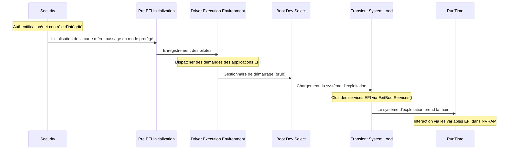
Security
The BIOS isn't our domain, but we must protect the foundations.
- Set a UEFI password
- Enable Secure Boot:
- Signs the bootloader, kernel, and verifies signatures at startup.
An Open Source BIOS 🎊
Open Firmware
Firmware Switching (Proprietary Firmware or System76 Open Firmware)
Kernel
- Static code
- Loaded at startup
- Isolates programs from the machine
- Interfaces with user space via
SYSCALL
Kernel Components Summary
| Component | Description | Study Time |
|---|---|---|
| Scheduler | Determines which processes run and for how long using scheduling policies. | ✅ |
| Process Management | Manages processes and threads, deciding CPU allocation and priorities. | ✅ |
| System Calls | Handles requests to the operating system. | ✅ |
| I/O Management | Facilitates interactions between hardware and software. | ❌ |
| Drivers | Manages external devices. | ❌ |
| Inter-Process Communication | Provides communication mechanisms like signals, pipes, and semaphores. | ❌ |
| RAM Sharing Between Processes | Uses virtual memory and paging for isolation and sharing. | ❌ |
Scheduler
What is it?
How do we run multiple processes?
Scheduler and Timer
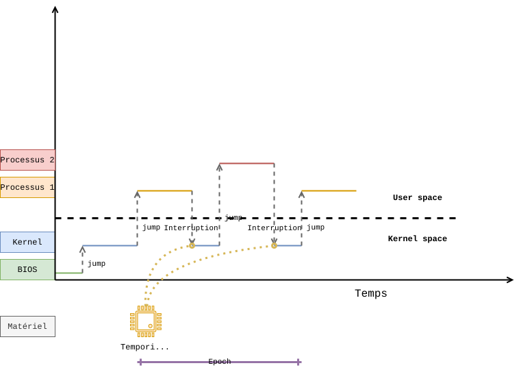
- Scheduler: Algorithm that uses a timer circuit to share CPU access.
- The kernel interrupts processes.
- The time it takes to give all processes a chance to execute is called an epoch.
- Uses system interruptions to function.
Scheduling Algorithms
- Round Robin (each takes turns)
- Priority-based
- Multi-level feedback queues
As in life, inequalities can be created.
# renice - alter priority of running processes
renice
Example:
On critical systems like rockets 🚀, each process can have a set priority. This is easier when you know all processes in advance.
System Calls (Syscalls)
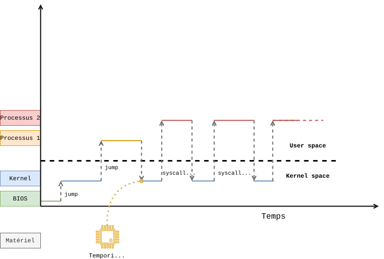
-
Communication protocol with the kernel
-
List of numerical identifiers
-
Found in kernel source code:
SYSCALL_DEFINE3(ioctl, unsigned int, fd, unsigned int, cmd, unsigned long, arg) { /* do freaky ioctl stuff */ }
| System Call | rax | rdi | rsi | rdx | r10 | r8 | r9 |
|---|---|---|---|---|---|---|---|
| sys_chroot | 161 | const char* filename | |||||
| sys_chmod | 90 | const char* filename | uid_t user | gid_t group | |||
| sys_mkdir | 83 | const char* pathname | int mode |
License Course
- Intangible Assets
- Theft
- Software Can't be stolen
- Internet
- Licenses and Business Models
- French Law
- Degradation
- Cyber War
- Issues with AI Models
- Making Money
- Bibliography
Intangible Assets
- Intangibles, which can't be touched.
- No competition on products.
Theft
Theft is the fraudulent appropriation of another person's property. Penal Code Article 311-1
Wiktionary
Software Can't be stolen
- Software is an intangible asset.
Internet
- Allows a marginal technical cost:
e.g:
- Proliferation of e-commerce, e-learning, e-services.
Licenses and Business Models
Rights Holder
The author of an intellectual work enjoys, by the mere act of its creation, an exclusive incorporeal property right enforceable against all. Intellectual Property Code (article L111-1)
- The rights holder chooses the license.
- In a company, rights are transferred to the company (except for interns)
Proprietary Licenses
- Classic, closed, proprietary.
Shareware Licenses
- WinRAR
- Viral marketing
- No longer exists
- Difficulty at the time in reaching an audience
1 million use it and 100 pay == 1000 use it and 100 pay
Freeware
- Indirect monetization:
- Often used for services: SAAS
- If the service is free, you are the product.
Examples:
- Google Drive
- Discord
- Discord doesn't sell user data.
- Discord dilutes its shares.
Freemium
- Free at first and then encourage payment.
Examples:
- Pay to win
- Tinder
Open Source
- Free
- Can benefit from community support
- Internet allows marginal economic sharing cost
Copyleft
- Contagious
- A way to make software (or other works) free
Summary

Economically
- Highly effective:
- Network effect:
- Viral
- Popular
- Devastates competition
- Chromium
- KDE
- Network effect:
French Law
Asymmetry
- Primacy of French law
- Patents are illegal in France
- Software patents are legal in Europe
EPO
- A hybrid organization
- No accountability
- No democratic control
- No legal oversight
- Changing the EU constitution would be required to reform the EPO.
- Anti-free software
- 3/4 of software patents granted by the EPO are held by non-European countries.
- Dicey
Patent Trolls
- Companies that exist solely to file lawsuits.
Useless Patents
- Useless patents:
- Double click: Microsoft, 2007
- One-click purchase: Amazon, 1999
- Hyperlink patent: IBM, 1998
- Window patent: Xerox, 1984
Primacy of US Law
- Entering the patent system means submitting to US law.
Hindrance to Innovation
- Anti-innovation
- Allows international firms to appropriate technologies
- Puts small and medium enterprises at a disadvantage against giants
- Innovation doesn't come from large corporations.
- Large corporations buy, fund, integrate
Degradation
Hashicorp Case
All Hashicorp software has moved from free licenses to BUSL.
Monetization of Social and Symbolic Capital
Bourdieu:
- Economic capital
- Cultural capital
- Symbolic capital
- Social capital
Deterioration of public goods?
Cyber War
- A war has been won:
Free software dominates in all areas:
- Profitability
- Individual rights and freedoms
- Performance
But
- A new war is ongoing...
- A battle over cloud providers and, more generally, platforms.
- SAAS, a new tool for depriving freedoms.
Copyright law shows its limits on databases due to artificial intelligence:
- Freeing models
- Risks of privatization
- Risk of theft
Issues with AI Models
ChatGPT === Wikipedia + Reddit + Twitter + Marmiton + ...
The problem with recommendation algorithms:
- Cambridge Analytica
- QAnon
- X
- etc...
Tools that are:
- Opaque
- Non-democratic
- Uncontrolled
- Built on unclear data usage.
Making Money
- It's possible to build an open-source company, and it even has several advantages:
- Psychological support from the community.
- Regional support
- Forces better product design
- Easier recruitment
Bibliography
- https://fr.wiktionary.org/wiki/soustraction
- https://opentf.org/
- https://fr.wikipedia.org/wiki/Bien_immatériel
- Intellectual Property Code:
- Penal Code:
Technical Documentation: A Cross-Disciplinary Approach
Introduction to Technical Documentation
Definition and Roles
Technical documentation is an essential component of a project's lifecycle. It allows:
- Knowledge transfer.
- Easier system maintenance and evolution.
- Improved user and developer experience.
Types of Documentation
- User Documentation
- API Documentation
- Architecture Documentation
- Reference Documentation and Practical Guides
Structuring Knowledge
Structuring Methods
Zettelkasten
A dynamic approach to knowledge management:
- Interconnected notes
- Facilitates research and critical thinking
Diátaxis
A structure based on user needs:
- Tutorials
- How-To Guides
- References
- Explanations
Documentation Types and Evolution
ADR (Architectural Decision Records)
- Documenting architectural decisions
- Transparency and tracking project evolution
Tech Radar
- Tracking technologies in use and under evaluation
- Aiding in technical decision-making
EventStorming
- Collaborative modeling of business processes
- Identifying critical points in a system
Best Practices for Writing Documentation
Clarity and Structure
- Using simple and precise language
- Organizing content into coherent sections and subsections
Consistency and Uniformity
- Adhering to style guides
- Using automated validation tools: Vale, Doc Detective
Accessibility in Documentation
Why Make Documentation Accessible?
- Inclusion for all users
- Compliance with standards (e.g., WCAG)
Tools and Best Practices
- mdBook: Generating accessible digital documentation
- Vale: Verifying accessibility standards
- Doc detective: Verifying accessibility standards
Automating Documentation
Automating Repository Linting
- Checking syntax and style
- VHS: Capturing terminal sessions and creating interactive tutorials
- Vale: Automatic style checking
Automatic Documentation Generation
Generating Documentation from Source Code
- rustdoc: Automatically extracting documentation from code comments
- mdBook cmd-run: Running commands within documentation
- VHS: Interactive documentation with execution recordings
Collaboration and Version Control
Versioning Documentation
- Using Git and GitHub
- Review process with pull requests
- ADR for decision tracking
Tools and Dedicated Platforms
Overview of Collaborative Tools
- mdBook: Generating digital books
- EventStorming: Collaborative documentation modeling
- Tech Radar: Tracking technology choices
LLM and AI for Documentation
AI-Assisted Writing and Automatic Generation
- AIChat: Command-line AI assistant
- Mermaid Chart GPT: Automatically generating diagrams
Tech radar
TP 1: Packaging with Nix
Learning Objectives
By the end of this practical, you will be able to:
- Understand what Nix is and why reproducible builds matter
- Set up a Nix flake project from scratch using the course template
- Use a reproducible development environment with
devShells - Package a simple application with Nix
- Inspect derivations, dependency trees, and closures to understand Nix artefacts
- Use the Nix REPL to interactively explore packages and flake outputs
- Explain the difference between imperative and declarative package management
Prerequisites
- Nix is installed
- Comma is installed
- Basic command-line skills (cd, ls, cat, git)
- A text editor you are comfortable with
Part 1: Why Nix? (15 min)
The Problem
Imagine this situation: you join a new team. You clone the project, run npm install, and...
it fails. A colleague says "it works on my machine". You spend 2 hours debugging.
This is the problem Nix solves.
Traditional package management vs Nix
| Aspect | Traditional (apt, brew, npm) | Nix |
|---|---|---|
| Install location | Global (/usr/bin, /usr/lib) | Isolated (/nix/store/...) |
| Reproducibility | "It works on my machine" | Same input = same output, always |
| Rollback | Difficult or impossible | Built-in, instant |
| Multiple versions | Conflicts | No conflicts, all coexist |
| Dependency tracking | Partial | Complete dependency graph |
Key Concepts
Derivation: A Nix derivation is a recipe that describes how to build something. It specifies:
- The source code
- The build dependencies
- The build commands
- The expected output
Think of it like a cooking recipe: given the same ingredients and the same steps, you always get the same dish.
The Nix Store: Every package built by Nix lives in /nix/store/ with a unique hash in its path:
/nix/store/abc123...-python-3.11.5/
/nix/store/def456...-python-3.12.1/
Both versions coexist without conflict. The hash ensures that if any input changes, the path changes too.
Flake: A flake.nix file is the modern entry point for a Nix project. It declares:
- inputs: where dependencies come from (e.g., nixpkgs)
- outputs: what the project provides (packages, dev shells, etc.)
Check Your Understanding
Before moving on, make sure you can answer:
- Why can two versions of Python coexist in the Nix store?
- What happens to the store path if you change a build dependency?
Part 2: Setting Up Your Project (20 min)
Step 1: Initialize the project
Create a new directory and initialize it with the course template:
mkdir -p my-first-nix-project
cd my-first-nix-project
git init # Safe to run multiple times
nix flake init -t 'github:Dauliac/Cours' # Skip this if flake.nix already exists
If
nix flake initfails with "file already exists", it means you already ran this step. You can safely move on.
Step 2: Explore what was generated
List the files:
find . -type f
You should see:
./flake.nix # The project's entry point
./nix/default.nix # Auto-imports all .nix files in nix/
./nix/dev-shell.nix # Development environment definition
./nix/treefmt.nix # Code formatting configuration
./Taskfile.yaml # Task runner (like Make, but better)
./.envrc # Direnv integration (auto-loads the environment)
./lefthook.yaml # Git hooks configuration
Step 3: Understand the flake structure
Open flake.nix and read it carefully:
cat flake.nix
{
description = "Changeme"; # <- Describe your project here
inputs = {
nixpkgs.url = "github:NixOS/nixpkgs/nixos-24.11"; # <- Package repository
flake-parts.url = "github:hercules-ci/flake-parts"; # <- Flake helper
treefmt-nix.url = "github:numtide/treefmt-nix"; # <- Code formatter
};
outputs = inputs@{ flake-parts, ... }:
flake-parts.lib.mkFlake { inherit inputs; } (_: {
systems = [
"x86_64-linux"
"x86_64-darwin"
"aarch64-darwin"
];
imports = [ ./nix ]; # <- All Nix configuration lives in ./nix/
});
}
Key takeaway: inputs declares where things come from. outputs declares what the project provides. The ./nix/ directory contains the actual definitions.
Step 4: Enter the development environment
# Track all generated files (Nix flakes ONLY see git-tracked files!)
git add .
# Enter the development shell
nix develop
Why
git add? Nix flakes use git to determine which files exist. If a file is not tracked by git, Nix cannot see it. This is a common source of "file not found" errors. Alwaysgit addnew files before running anynixcommand.
You are now inside a reproducible shell. Every tool listed in nix/dev-shell.nix is available, regardless of what is installed on your system.
Try it:
# These tools are available even if you never installed them:
task --version
vale --version
convco --version
Step 5: Understand the dev shell
Open nix/dev-shell.nix:
devShells.default = pkgs.mkShell {
nativeBuildInputs = with pkgs; [
go-task # Task runner
lefthook # Git hooks
vale # Documentation linter
trufflehog # Secret scanner
convco # Conventional commits
sops # Secret management
];
shellHook = ''
lefthook install --force
'';
};
nativeBuildInputs lists the tools available in the shell. shellHook runs commands when you enter the shell (here: installing git hooks).
Checkpoint
Run these commands and verify they work:
nix develop
task --list
nix flake show
nix flake show displays all the outputs of your project. You should see your devShell listed.
Step 5b: Discover the build tools
Your dev shell includes two tools that make working with Nix much more pleasant:
nom (nix-output-monitor): Replaces the default Nix build output with a rich, real-time view showing what's being built, downloaded, and how much is left:
# Instead of plain "nix build":
nom build
You will see a live progress bar with active builds, downloads, and store paths. This is especially useful when building for the first time (many dependencies to fetch).
nix-tree: An interactive terminal tool to explore the dependency tree of any Nix package:
# Explore the dev shell's dependencies interactively
nix-tree .#devShells.x86_64-linux.default
Navigate with arrow keys, press Enter to expand nodes. This shows you exactly what Nix pulled in and why.
Try both now. You will use them throughout the TPs.
Part 3: Adding Dependencies (15 min)
Step 6: Add a tool to your dev shell
Let's say your project needs jq (a JSON processor) and curl. Edit nix/dev-shell.nix:
nativeBuildInputs = with pkgs; [
go-task
lefthook
vale
trufflehog
convco
sops
jq # <- Add this
curl # <- Add this
];
Now reload the shell:
# If you are inside a nix develop session, leave it first:
# Press Ctrl+D or type 'exit'
# Then re-enter:
nix develop
jq --version # Verify jq is available
curl --version # Verify curl is available
How to find packages
Search for packages in nixpkgs:
# From the command line
nix search nixpkgs python
# Or use the web interface: https://search.nixos.org/packages
Step 7: Try with direnv (optional but recommended)
If you have direnv installed, the .envrc file will automatically load your dev shell whenever you cd into the project:
direnv allow
cd ..
cd my-first-nix-project # Shell loads automatically
No more nix develop needed. The environment loads and unloads as you navigate.
Part 4: Packaging a Simple Application (30 min)
Step 8: Write a small program
Create a simple shell script that we will package with Nix.
Create a file hello.sh:
#!/usr/bin/env bash
echo "Hello from my first Nix package!"
echo "Current date: $(date)"
echo "Built with Nix - reproducible by design."
git add hello.sh
Step 9: Create the Nix package definition
Create a file nix/package.nix:
{ pkgs, ... }:
{
config.perSystem =
{ pkgs, config, ... }:
{
packages.default = pkgs.writeShellApplication {
name = "hello-nix";
runtimeInputs = with pkgs; [ coreutils ];
text = builtins.readFile ../hello.sh;
};
# Expose the package as a runnable app
apps.default = {
type = "app";
program = "${config.packages.default}/bin/hello-nix";
};
};
}
Line by line:
pkgs.writeShellApplicationis a Nix helper that creates a proper shell script packagenameis the name of the resulting binaryruntimeInputsare the dependencies available at runtimetextreads our script fileapps.defaultexposes the package so you can run it directly withnix run
Remember: after creating any new
.nixfile, alwaysgit addit immediately. Nix flakes ignore untracked files.
Step 10: Track the new file with git
Critical rule: Nix flakes can only see files tracked by git. Every time you create a new
.nixfile, you must rungit addon it before Nix can use it.
git add nix/package.nix
You do not need to edit nix/default.nix. The template uses auto-import: any .nix file you add to the nix/ directory is automatically picked up, as long as git tracks it.
Open nix/default.nix to see how it works:
# Auto-import all .nix files in this directory (except default.nix itself).
# Just create a new .nix file, run `git add` on it, and it will be picked up automatically.
nixFiles = builtins.filter (name: name != "default.nix") (
builtins.filter (name: builtins.match ".*\\.nix" name != null) (
builtins.attrNames (builtins.readDir ./.)
)
);
This reads all .nix files in the directory and imports them. No manual registration needed.
Step 11: Build and run your package
# Build the package with fancy output
nom build
# The result is a symlink called "result"
ls -la result/
# Run it directly from the build output
./result/bin/hello-nix
# Or run it with nix run (builds + runs in one step)
nix run
nix run builds the default app and executes it in one command - no need to find the binary yourself. You should see the greeting message. Congratulations, you just built your first Nix package.
Step 12: Explore the build output
# See what's in the result
tree result/ 2>/dev/null || find result/ -type f
# See the actual store path
readlink result
Notice the /nix/store/HASH-hello-nix path. This is your package in the Nix store. The hash is derived from all inputs. If you change the script, the hash changes.
Checkpoint
Verify your understanding by answering:
- What command builds a Nix flake's default package?
- Where does the build output live?
- What would happen if you changed the script text?
Part 5: Understanding Derivations and Dependencies (20 min)
Now that you have a working package, let's look inside it. Nix gives you powerful tools to inspect exactly what was built, how, and why.
Step 13: Inspect the derivation
A derivation is the low-level build recipe Nix actually executes. Every nix build produces one. Let's look at yours:
nix show-derivation .#default
This outputs JSON describing the exact build plan: the builder, arguments, environment variables, input sources, and input derivations. Notice:
"builder": the program that runs the build (usually bash)"inputDrvs": other derivations this one depends on (coreutils, bash, etc.)"env": the environment variables set during the build"outputs": where the result will be stored
Every field is deterministic. Change any input, and the output hash changes.
Step 14: Visualize the dependency tree
Use nix-tree to interactively explore what your package depends on:
nix-tree .#default
Navigate with arrow keys and Enter. You will see your package at the top, with its full dependency tree below. Each node shows:
- The store path and its size
- The closure size (total size including all transitive dependencies)
This is the closure - the complete set of everything needed to run your package. Nothing more, nothing less.
Step 15: Measure the closure
# Show all runtime dependencies with sizes
nix path-info -rsSh .#default
This lists every store path in the closure with:
- NAR size (
-s): the size of the path itself - Closure size (
-S): total size including dependencies - Human-readable (
-h)
# Just the total closure size
nix path-info -Sh .#default
For a simple shell script, you should see a closure of around 30-40 MB (mostly coreutils and bash).
Step 16: Explore with the Nix REPL
The Nix REPL lets you inspect and evaluate Nix expressions interactively. This is the most powerful debugging tool in the Nix ecosystem:
nix repl
Inside the REPL, load your flake:
:lf .
Now explore:
# See all outputs
outputs
# Inspect your package
outputs.packages.x86_64-linux.default
# See its name
outputs.packages.x86_64-linux.default.name
# See its derivation path
outputs.packages.x86_64-linux.default.drvPath
# List attributes of nixpkgs
builtins.attrNames inputs.nixpkgs.legacyPackages.x86_64-linux
# Check a package version
inputs.nixpkgs.legacyPackages.x86_64-linux.python3.version
# Exit
:q
The REPL is invaluable for debugging flakes, understanding how packages are composed, and exploring nixpkgs.
Step 17: Build and run with style
Use nom (nix-output-monitor) for a much better build experience:
# Build with live progress display
nom build
# Build and run in one step
nix run
# Or use the task runner
task build
task run
nom replaces the default Nix output with a rich, real-time view showing active builds, downloads, and store paths. The task run command builds and runs the default app in one step.
Check Your Understanding
- What is the difference between a derivation and a package?
- How can you find out why a dependency is in your closure?
- What does
:lf .do in the Nix REPL?
Part 6: Code Quality Automation (20 min)
Step 18: Use the formatter
The template includes treefmt for automatic code formatting:
# Format all code in the project
nix fmt
This runs all configured formatters (see nix/treefmt.nix): shell formatting, Nix formatting, YAML formatting, and more. All at once, all reproducible.
Step 19: Use the task runner
The template already includes a Taskfile.yaml with useful tasks. List them:
task --list
You should see tasks like build, run, test, tree, closure, fmt, and check. Try them:
# Build with nom (fancy output)
task build
# Build and run the default app in one step
task run
# Show the dependency tree interactively
task tree
# Show closure sizes
task closure
# Format all code
task fmt
# Run all checks (format + build + test)
task check
You can customize Taskfile.yaml to add your own tasks. For example, add a test that verifies your package output:
test:
deps:
- build
desc: Test the package runs correctly
cmds:
- ./result/bin/hello-nix | grep "Hello"
Step 20: Understand git hooks with lefthook
The lefthook.yaml file ensures code is formatted before every commit:
pre-commit:
commands:
fmt:
tags: formatter
run: nix fmt
stage_fixed: true
This means: every time you git commit, Nix automatically formats your code. If formatting changes files, they are re-staged. No more "forgot to format" in code reviews.
Part 7: Going Further (Bonus)
These exercises are optional, for students who finish early or want to dig deeper.
Challenge 1: Package a real program
Instead of a shell script, try packaging a simple Python or Go program:
# Example: a Python script
packages.default = pkgs.writers.writePython3Bin "my-tool" {
libraries = with pkgs.python3Packages; [ requests ];
} ''
import requests
r = requests.get("https://httpbin.org/ip")
print(f"Your IP: {r.json()['origin']}")
'';
Challenge 2: Add a second package
Create a packages.other in addition to packages.default:
# Build a specific package
nix build .#other
Challenge 3: Pin a specific nixpkgs version
Change the nixpkgs input in flake.nix to a specific commit and observe how flake.lock changes:
nixpkgs.url = "github:NixOS/nixpkgs/nixos-24.11";
nix flake update
git diff flake.lock
Summary
In this practical, you learned:
| Concept | What you did |
|---|---|
| Nix flakes | Initialized a project with nix flake init |
| Dev shells | Created a reproducible development environment |
| Package management | Added/removed tools declaratively |
| Auto-import | New .nix files are picked up automatically (just git add) |
| Packaging | Built a shell script into a Nix package |
| Derivations | Inspected build recipes with nix show-derivation |
| Dependency analysis | Explored closures with nix-tree and nix path-info |
| Nix REPL | Interactively explored flake outputs and nixpkgs |
| Build UX | Used nom for fancy builds and nix run for instant execution |
| Code quality | Used formatters, linters, and git hooks |
| Task automation | Used pre-built tasks with task |
Key Commands Reference
| Command | Purpose |
|---|---|
nix flake init -t <template> | Initialize a project from a template |
nix develop | Enter the development shell |
nom build | Build the default package with fancy output |
nix run | Build and run the default app in one step |
nix fmt | Format all code |
nix flake show | Show all flake outputs |
nix search nixpkgs <name> | Search for packages |
nix show-derivation .#default | Inspect the build recipe (derivation) |
nix-tree .#default | Interactive dependency tree explorer |
nix path-info -rsSh .#default | Show closure size and dependencies |
nix repl then :lf . | Interactive Nix expression explorer |
What's Next?
In the next TP, you will learn how to build container images and understand why reproducibility matters even more in that context.
TP 2: Building Containers - The Traditional Way
Learning Objectives
By the end of this practical, you will be able to:
- Explain what a container is and how it differs from a virtual machine
- Write a Dockerfile following best practices
- Build optimized container images using multi-stage builds
- Analyze image size, layers, and security implications
- Identify the limitations of traditional container builds
Prerequisites
- Completed TP 1: Packaging with Nix
- Docker installed (see below)
- Basic understanding of Linux command line
Installing Docker
Linux
Install Docker Engine using the official convenience script:
# Install Docker
curl -fsSL https://get.docker.com | sudo sh
# Add your user to the docker group (avoids needing sudo for every command)
sudo usermod -aG docker "$USER"
# Apply the new group (or log out and back in)
newgrp docker
# Verify the installation
docker run hello-world
macOS
Docker Desktop is the recommended way to run Docker on macOS:
- Download Docker Desktop from docker.com/products/docker-desktop
- Open the
.dmgfile and drag Docker to your Applications folder - Launch Docker Desktop from Applications
- Wait for the Docker engine to start (the whale icon in the menu bar stops animating)
Alternatively, using Homebrew:
brew install --cask docker
# Then launch Docker Desktop from Applications
Verify the installation:
docker run hello-world
Windows (WSL 2)
Docker Desktop integrates with WSL 2 to run Linux containers on Windows:
-
Enable WSL 2 if not already done:
# In PowerShell as Administrator wsl --installRestart your machine if prompted.
-
Install Docker Desktop from docker.com/products/docker-desktop
-
During installation, ensure "Use WSL 2 instead of Hyper-V" is checked
-
Open Docker Desktop → Settings → Resources → WSL Integration → Enable integration with your Linux distribution
-
Open your WSL terminal and verify:
docker run hello-world
Note: All the commands in this TP should be run inside your WSL terminal, not in PowerShell or CMD.
Alternative: Install via Nix
If you already have Nix installed from TP 1:
nix profile install nixpkgs#docker
This installs the Docker CLI only. On Linux, you still need the Docker daemon running (
sudo systemctl start docker). On macOS/WSL, you still need Docker Desktop.
Part 1: What Is a Container? (15 min)
From Physical Machines to Containers
The history of isolation in computing follows a clear trend toward lighter abstraction:
Physical Machine → Virtual Machine → Container → Function/Lambda
(heavy) (medium) (light) (lightest)
Container vs Virtual Machine
| Aspect | Virtual Machine | Container |
|---|---|---|
| Isolation | Full OS with its own kernel | Shares the host kernel |
| Startup time | Minutes | Milliseconds |
| Size | Gigabytes | Megabytes |
| Overhead | High (full OS) | Low (just the process) |
| Security | Strong isolation | Weaker isolation (shared kernel) |
How Containers Work (Under the Hood)
Containers are not magic. They are built on three Linux kernel features:
-
Namespaces: Isolate what a process can see
- PID namespace: the container sees its own process tree
- Network namespace: the container has its own network stack
- Mount namespace: the container has its own filesystem
-
Cgroups (Control Groups): Limit what a process can use
- CPU limits
- Memory limits
- I/O limits
-
Union Filesystems (OverlayFS): Layer images efficiently
- Each instruction in a Dockerfile creates a new layer
- Layers are shared between images
- Only the top layer is writable
The OCI Standard
Containers follow the Open Container Initiative (OCI) specification. This means images built by Docker work with Podman, containerd, and Kubernetes. The standard defines:
- Image format: How layers and metadata are stored
- Runtime spec: How containers are executed
- Distribution spec: How images are pushed/pulled from registries
Check Your Understanding
- What kernel feature prevents a container from seeing host processes?
- Why are containers faster to start than VMs?
- Can you run a Windows container on a Linux host? Why or why not?
Part 2: Your First Dockerfile (20 min)
Step 1: Create a simple application
Let's start with a minimal Python web server. Create a project directory:
mkdir -p container-tp
cd container-tp
git init # Safe to run multiple times
Create app.py:
from http.server import HTTPServer, BaseHTTPRequestHandler
import json
import os
class Handler(BaseHTTPRequestHandler):
def do_GET(self):
response = {
"message": "Hello from my container!",
"hostname": os.uname().nodename,
"path": self.path
}
self.send_response(200)
self.send_header("Content-Type", "application/json")
self.end_headers()
self.wfile.write(json.dumps(response).encode())
server = HTTPServer(("0.0.0.0", 8080), Handler)
print("Server running on port 8080...")
server.serve_forever()
Step 2: Write a naive Dockerfile
Create a Dockerfile:
FROM python:3.12
WORKDIR /app
COPY app.py .
CMD ["python", "app.py"]
Step 3: Build and run
docker build -t my-app:v1 .
# Stop any previous run of this container, then start fresh
docker rm -f my-app-v1 2>/dev/null || true
docker run --rm --name my-app-v1 -p 8080:8080 my-app:v1
In another terminal:
curl http://localhost:8080/
To stop the container, press
Ctrl+Cin the terminal where it runs. The--rmflag ensures it is automatically cleaned up.
You should see a JSON response. It works. But is it good?
Step 4: Analyze the image
docker images my-app:v1
Note the image size. It is likely over 1 GB. For a 20-line Python script. Why?
docker history my-app:v1
The base image python:3.12 includes:
- A full Debian operating system
- Build tools (gcc, make, etc.)
- Hundreds of system packages you don't need
- The full Python installation
The Problem
This image has:
- Unnecessary attack surface: hundreds of binaries an attacker could exploit
- Wasted bandwidth: pushing/pulling 1 GB for every deploy
- Slow startup: loading unnecessary layers
- No reproducibility:
python:3.12changes over time (it's a moving tag)
Part 3: Making It Better - Multi-Stage Builds (25 min)
Step 5: Use a slim base image
Replace your Dockerfile:
FROM python:3.12-slim
WORKDIR /app
COPY app.py .
EXPOSE 8080
CMD ["python", "app.py"]
docker build -t my-app:v2 .
docker images my-app # Compare v1 and v2 sizes
Compare sizes. slim removes build tools and documentation, typically cutting the image by 60-70%.
Step 6: Use a multi-stage build
For compiled languages, multi-stage builds are essential. Let's demonstrate with a Go example.
Create main.go:
package main
import (
"encoding/json"
"fmt"
"net/http"
"os"
)
func handler(w http.ResponseWriter, r *http.Request) {
hostname, _ := os.Hostname()
response := map[string]string{
"message": "Hello from Go container!",
"hostname": hostname,
"path": r.URL.Path,
}
w.Header().Set("Content-Type", "application/json")
json.NewEncoder(w).Encode(response)
}
func main() {
http.HandleFunc("/", handler)
fmt.Println("Server running on port 8080...")
http.ListenAndServe(":8080", nil)
}
Create go.mod:
module container-tp
go 1.22
Now create a multi-stage Dockerfile for Go, Dockerfile.go:
# Stage 1: Build
FROM golang:1.22 AS builder
WORKDIR /app
COPY go.mod .
COPY main.go .
RUN CGO_ENABLED=0 GOOS=linux go build -o server .
# Stage 2: Run
FROM scratch
COPY --from=builder /app/server /server
EXPOSE 8080
CMD ["/server"]
docker build -f Dockerfile.go -t my-app:v3-go .
docker images my-app
scratch is a completely empty image. The resulting image contains only your binary. Typically under 10 MB.
Understanding Multi-Stage Builds
┌─────────────────────────┐
│ Stage 1: "builder" │
│ - Full Go toolchain │ ← Thrown away
│ - Source code │
│ - Compiled binary │──────┐
└─────────────────────────┘ │
│ COPY --from=builder
┌─────────────────────────┐ │
│ Stage 2: final image │ ←────┘
│ - Only the binary │
│ - Nothing else │
└─────────────────────────┘
The build tools stay in the builder stage. Only the artifact moves to the final image.
Part 4: Security Best Practices (20 min)
Step 7: Don't run as root
By default, containers run as root. This is dangerous. If an attacker escapes the container, they have root on the host.
FROM python:3.12-slim
# Create a non-root user
RUN groupadd -r appuser && useradd -r -g appuser appuser
WORKDIR /app
COPY app.py .
# Switch to non-root user
USER appuser
EXPOSE 8080
CMD ["python", "app.py"]
Step 8: Scan for vulnerabilities
# Install trivy if not available (safe to run multiple times)
command -v trivy >/dev/null || nix profile install 'nixpkgs#trivy'
trivy image my-app:v1
trivy image my-app:v2
Compare the CVE counts. The slim image has significantly fewer vulnerabilities because it has fewer packages.
Step 9: Use pinned digests instead of tags
Tags are mutable. python:3.12-slim today is different from python:3.12-slim six months ago.
# Bad: tag can change
FROM python:3.12-slim
# Good: pinned to exact image
FROM python:3.12-slim@sha256:abc123...
To get the digest:
# Pull the image first if you haven't already
docker pull python:3.12-slim 2>/dev/null || true
docker inspect --format='{{index .RepoDigests 0}}' python:3.12-slim
Security Checklist
| Practice | Why |
|---|---|
| Use minimal base images | Fewer packages = fewer vulnerabilities |
| Run as non-root | Limit damage if container is compromised |
| Pin image digests | Prevent supply chain attacks |
| Don't store secrets in images | Secrets in layers are visible with docker history |
Use .dockerignore | Prevent leaking source code, .git, .env files |
| Scan images regularly | Catch known CVEs before deployment |
Part 5: The Remaining Problems (10 min)
What Docker Doesn't Solve
Even with all best practices, Docker has fundamental limitations:
1. Non-reproducible builds
RUN apt-get update && apt-get install -y curl
This installs whatever version of curl is in the repo today. Build the same Dockerfile in 6 months, and you get different packages. Your flake.lock from TP 1 solves this for Nix; Docker has no equivalent.
2. Layer ordering matters
# Bad: changing app.py invalidates the COPY layer AND all subsequent layers
COPY . .
RUN pip install -r requirements.txt
# Better: install deps first, copy code second
COPY requirements.txt .
RUN pip install -r requirements.txt
COPY app.py .
Layer caching is fragile and depends on instruction order, not content hashing.
3. The "minimal image" problem
To build a truly minimal image, you need to know the exact runtime dependencies of your binary. Miss one shared library and the container crashes. Include too many and you bloat the image.
There is no systematic way to determine the minimal closure of dependencies in Docker.
4. Build environment leaks
Even with multi-stage builds, the build environment (network access, timestamps, environment variables) can leak non-determinism into the output.
Reflection
Think about these questions:
- If you build the same Dockerfile on two different machines, will you get the same image hash?
- How do you know your
slimimage doesn't contain unnecessary packages? - Is there a way to build a container image without Docker at all?
The answer to the last question is yes - and that's what TP 3 is about.
Exercises
Exercise 1: Size comparison table
Build images using different base images and fill in this table:
| Base Image | Size | CVE Count (trivy) | Contains Shell? |
|---|---|---|---|
python:3.12 | ? | ? | ? |
python:3.12-slim | ? | ? | ? |
python:3.12-alpine | ? | ? | ? |
gcr.io/distroless/python3 | ? | ? | ? |
Exercise 2: Multi-stage for your TP1 project
Take the Nix package you built in TP 1 and try to containerize it using a traditional multi-stage Dockerfile. Note the difficulties you encounter.
Exercise 3: .dockerignore
Create a .dockerignore file for your project. Build the image with and without it and compare the build context size.
Summary
| What you learned | Key takeaway |
|---|---|
| Container fundamentals | Namespaces, cgroups, and overlay filesystems |
| Dockerfile best practices | Slim images, multi-stage builds, layer ordering |
| Security hardening | Non-root users, pinned digests, vulnerability scanning |
| Docker limitations | Non-reproducible, no systematic minimality, layer ordering fragility |
Key Commands Reference
| Command | Purpose |
|---|---|
docker build -t name:tag . | Build an image |
docker run --rm -p 8080:8080 name:tag | Run a container (auto-cleanup) |
docker images | List images |
docker history <image> | Show image layers |
trivy image <image> | Scan for vulnerabilities |
What's Next?
In TP 3, you will discover how Nix can build container images that are reproducible, minimal, and secure by design - without even needing Docker to build them.
TP 3: Perfect Containers with Nix
Learning Objectives
By the end of this practical, you will be able to:
- Build OCI container images using Nix, without Docker
- Compare Nix-built images with traditional Docker images
- Explain why Nix images are reproducible and minimal by design
- Create a multi-service container setup with Nix-built images
- Evaluate when to use Nix containers vs traditional Dockerfiles
Prerequisites
- Completed TP 1: Packaging with Nix
- Completed TP 2: Building Containers
- Docker or Podman available (for loading/running images)
- Nix with flakes enabled
Part 1: The Nix Approach to Containers (15 min)
Why Build Containers with Nix?
In TP 2, we identified fundamental problems with traditional Docker builds:
| Problem | Docker's answer | Nix's answer |
|---|---|---|
| Reproducibility | Pin digests (manual) | Deterministic by design (automatic) |
| Minimal images | Distroless / scratch (guesswork) | Exact dependency closure (computed) |
| Build consistency | "Same Dockerfile" (not enough) | Same inputs = same output (guaranteed) |
| Layer optimization | Careful ordering (fragile) | Content-addressed layers (automatic) |
How Nix Builds Container Images
Nix doesn't use Docker to build images. Instead, it:
- Computes the exact set of runtime dependencies (the closure)
- Creates OCI image layers from the Nix store paths
- Produces a
.tar.gzfile you can load into any OCI runtime
┌──────────────────────────────────────────┐
│ Nix builds the image │
│ │
│ Your app ──→ Nix computes closure ──→ OCI tar
│ (all dependencies) │
│ │
│ No Dockerfile. No Docker daemon. │
└──────────────────────────────────────────┘
│
▼
┌──────────────────────────────────────────┐
│ docker load < result │
│ docker run my-image │
└──────────────────────────────────────────┘
The closure is the key concept. When you build a Nix package, Nix knows every single dependency, transitively. When building a container, it includes exactly those dependencies and nothing more. No guessing, no extra packages.
Check Your Understanding
- What is a "closure" in the context of Nix?
- Why doesn't Nix need a Docker daemon to build images?
Part 2: Your First Nix Container (25 min)
Step 1: Set up the project
Start from your TP 1 project, or create a new one:
mkdir -p nix-container
cd nix-container
git init # Safe to run multiple times
nix flake init -t 'github:Dauliac/Cours' # Skip if flake.nix already exists
git add . # Nix flakes ONLY see git-tracked files!
If
nix flake initfails with "file already exists", it means you already ran this step. You can safely move on.Reminder from TP 1: every time you create a new file (especially
.nixfiles), rungit add <file>before anynixcommand. Nix flakes ignore untracked files.
Step 2: Create a simple application to containerize
Create app.sh:
#!/usr/bin/env bash
echo "=== Nix Container ==="
echo "Hostname: $(hostname)"
echo "Date: $(date)"
echo "User ID: $(id -u)"
echo ""
echo "This container contains only what Nix determined is needed."
echo "Nothing else. Truly minimal."
Step 3: Package the application
Create nix/package.nix:
_: {
config.perSystem =
{ pkgs, config, ... }:
{
packages.default = pkgs.writeShellApplication {
name = "my-app";
runtimeInputs = with pkgs; [ coreutils hostname ];
text = builtins.readFile ../app.sh;
};
apps.default = {
type = "app";
program = "${config.packages.default}/bin/my-app";
};
};
}
Track the new file and test it before containerizing:
git add nix/package.nix app.sh
nix run
Step 4: Add the container image definition
Create nix/container.nix:
_: {
config.perSystem =
{ pkgs, config, ... }:
{
packages.container = pkgs.dockerTools.buildImage {
name = "my-nix-app";
tag = "latest";
# copyToRoot includes these in the image
copyToRoot = pkgs.buildEnv {
name = "image-root";
paths = [ config.packages.default ];
pathsToLink = [ "/bin" ];
};
config = {
Cmd = [ "/bin/my-app" ];
};
};
};
}
Line by line:
pkgs.dockerTools.buildImage: Nix function that creates OCI imagesname/tag: The image name and tagcopyToRoot: What goes into the image (our package and its closure)config.Cmd: The command to run when the container starts
Step 5: Track and build
Remember: every new
.nixfile must begit added. The template auto-imports all.nixfiles fromnix/- no need to editdefault.nix.
git add nix/container.nix
nom build .#container
nom (nix-output-monitor) wraps nix build with a rich live progress view. This produces a result file that is a Docker-compatible image archive.
Step 6: Load and run the image
# Load the image into Docker (safe to run multiple times, overwrites previous load)
docker load < result
# Run it (--rm ensures the container is cleaned up when it exits)
docker run --rm my-nix-app:latest
You should see the greeting from your application.
Step 7: Inspect the image
docker images my-nix-app
docker history my-nix-app:latest
Note the image size. Compare it with the Docker images from TP 2. The Nix image contains only what your application needs to run.
Part 3: Deep Comparison (20 min)
Step 8: Measure everything
Let's build the same application with Docker and with Nix and compare.
Create a Dockerfile for comparison:
FROM debian:bookworm-slim
RUN apt-get update && apt-get install -y --no-install-recommends \
bash \
coreutils \
hostname \
&& rm -rf /var/lib/apt/lists/*
COPY app.sh /usr/local/bin/my-app
RUN chmod +x /usr/local/bin/my-app
CMD ["my-app"]
docker build -t my-docker-app:latest . # Safe to re-run, overwrites previous build
Now compare:
echo "=== Size comparison ==="
docker images my-nix-app
docker images my-docker-app
echo ""
echo "=== Layer comparison ==="
echo "Nix image layers:"
docker history my-nix-app:latest
echo ""
echo "Docker image layers:"
docker history my-docker-app:latest
echo ""
echo "=== Security comparison ==="
trivy image my-nix-app:latest 2>/dev/null | tail -5
trivy image my-docker-app:latest 2>/dev/null | tail -5
Expected Results
| Metric | Docker (debian-slim) | Nix |
|---|---|---|
| Image size | ~80-150 MB | ~30-50 MB |
| Number of packages | Hundreds | Only what's needed |
| CVEs | Several | Fewer or none |
| Reproducible | No (apt-get update) | Yes (locked inputs) |
| Contains shell | Yes (+ many utilities) | Only if explicitly added |
Step 9: Verify reproducibility
Build the Nix image twice:
# -o creates named symlinks (safe to re-run, overwrites previous symlinks)
nix build .#container -o result1
nix build .#container -o result2
# Compare the checksums
sha256sum result1
sha256sum result2
The hashes should be identical. The same build, run at any time, on any machine, produces the exact same image. Try the same with docker build - the hashes will differ.
Why the Difference?
Docker images include:
- Timestamps (file modification times, layer creation times)
- Non-deterministic package installation order
- Mutable base images
Nix images have none of these problems because Nix:
- Sets all timestamps to epoch 0 (1970-01-01)
- Computes exact dependency graphs deterministically
- Uses content-addressed store paths
Part 4: Advanced Nix Container Patterns (25 min)
Step 10: Layered images for faster pushes
By default, buildImage puts everything in one layer. For production, use buildLayeredImage to create separate layers:
Update nix/container.nix:
_: {
config.perSystem =
{ pkgs, config, ... }:
{
packages.container = pkgs.dockerTools.buildLayeredImage {
name = "my-nix-app";
tag = "latest";
contents = [ config.packages.default ];
config = {
Cmd = [ "/bin/my-app" ];
};
# Maximum number of layers
maxLayers = 125;
};
};
}
Why layered? When pushing to a registry, unchanged layers don't need to be re-uploaded. Nix creates layers based on the dependency graph, so updating your app only pushes the changed layer, not the entire image.
Step 11: Add a non-root user
_: {
config.perSystem =
{ pkgs, config, ... }:
let
# Create a minimal passwd file
nonRootShadowSetup = { user, uid, gid ? uid }: [
(pkgs.writeTextDir "etc/shadow" ''
root:!x:::::::
${user}:!:::::::
'')
(pkgs.writeTextDir "etc/passwd" ''
root:x:0:0::/root:${pkgs.runtimeShell}
${user}:x:${toString uid}:${toString gid}::/home/${user}:
'')
(pkgs.writeTextDir "etc/group" ''
root:x:0:
${user}:x:${toString gid}:
'')
(pkgs.writeTextDir "etc/gshadow" ''
root:x::
${user}:x::
'')
];
in
{
packages.container = pkgs.dockerTools.buildLayeredImage {
name = "my-nix-app";
tag = "latest";
contents = [
config.packages.default
] ++ nonRootShadowSetup { user = "appuser"; uid = 1000; };
config = {
Cmd = [ "/bin/my-app" ];
User = "appuser";
};
maxLayers = 125;
};
};
}
This creates a non-root user without needing useradd or any system utilities in the image.
Step 12: A web server container
Let's build something more realistic. Create a Go web server and containerize it.
Create main.go:
package main
import (
"encoding/json"
"fmt"
"net/http"
"os"
"runtime"
)
type Response struct {
Message string `json:"message"`
Hostname string `json:"hostname"`
GoVer string `json:"go_version"`
Path string `json:"path"`
}
func handler(w http.ResponseWriter, r *http.Request) {
hostname, _ := os.Hostname()
resp := Response{
Message: "Hello from Nix-built container!",
Hostname: hostname,
GoVer: runtime.Version(),
Path: r.URL.Path,
}
w.Header().Set("Content-Type", "application/json")
json.NewEncoder(w).Encode(resp)
}
func main() {
http.HandleFunc("/", handler)
fmt.Println("Server running on :8080")
http.ListenAndServe(":8080", nil)
}
Create nix/go-package.nix:
_: {
config.perSystem =
{ pkgs, ... }:
{
packages.go-server = pkgs.buildGoModule {
pname = "my-go-server";
version = "0.1.0";
src = ../.;
vendorHash = null; # No external dependencies
CGO_ENABLED = 0; # Static binary
};
};
}
Create nix/go-container.nix:
_: {
config.perSystem =
{ pkgs, config, ... }:
{
packages.go-container = pkgs.dockerTools.buildLayeredImage {
name = "my-go-server";
tag = "latest";
contents = [ config.packages.go-server ];
config = {
Cmd = [ "/bin/my-go-server" ];
ExposedPorts = {
"8080/tcp" = {};
};
};
maxLayers = 125;
};
};
}
Build and run:
git add main.go nix/go-package.nix nix/go-container.nix
nix build .#go-container
docker load < result
# Stop any previous run, then start fresh
docker rm -f my-go-server 2>/dev/null || true
docker run --rm --name my-go-server -p 8080:8080 my-go-server:latest
In another terminal:
curl http://localhost:8080/
To stop the container, press
Ctrl+C. The--rmflag auto-cleans it. If port 8080 is busy, thedocker rm -fline above handles leftover containers from previous runs.
Check the final image size:
docker images my-go-server
A statically compiled Go binary in a Nix container typically results in an image under 15 MB.
Part 5: When to Use What? (10 min)
Decision Matrix
| Scenario | Recommendation |
|---|---|
| Quick prototyping | Docker with Dockerfile |
| Team already uses Nix | Nix containers |
| Reproducible builds required | Nix containers |
| Minimal attack surface critical | Nix containers |
| CI/CD pipeline already Docker-based | Docker multi-stage |
| Deploying to Kubernetes in production | Nix containers (ideal) |
| Third-party base image required | Docker (can layer Nix on top) |
The Trade-offs
Nix containers are better when:
- You need bit-for-bit reproducibility
- Security auditing requires knowing every byte in the image
- You want the absolute minimal image
- Your team is already investing in Nix
Docker is better when:
- The team doesn't know Nix (learning curve)
- You depend on third-party Dockerfiles
- Rapid iteration matters more than reproducibility
- The ecosystem tooling (Docker Compose, etc.) is essential
The Best of Both Worlds
You can use Nix inside Docker or Docker around Nix:
# Use Nix to build, Docker to package
FROM nixos/nix:latest AS builder
COPY . /src
WORKDIR /src
RUN nix build
FROM scratch
COPY --from=builder /src/result/bin/my-app /my-app
CMD ["/my-app"]
Exercises
Exercise 1: Containerize your TP 1 package
Take the shell script you packaged in TP 1 and build a Nix container image for it. Compare its size with an equivalent Docker image.
Exercise 2: Explore the closure in depth
Use nix-tree to interactively visualize what goes into your container:
# Interactive dependency tree of your package
nix-tree .#default
Navigate with arrow keys and Enter. You can see every transitive dependency, its size, and why it was pulled in. This is the best way to understand why your container is the size it is.
Then measure it:
# Show all runtime dependencies with individual and closure sizes
nix path-info -rsSh .#default
# Just the total closure size
nix path-info -Sh .#default
This is what ends up in your container - nothing more, nothing less. If a dependency seems surprising, use nix why-depends to trace the dependency chain:
# Why does my package depend on glibc?
nix why-depends .#default nixpkgs#glibc
Exercise 3: Push to a registry
# Build and push directly (without Docker)
nix build .#container
skopeo copy docker-archive:result docker://registry.example.com/my-app:latest
skopeo can push Nix-built images to any OCI registry without needing a Docker daemon.
Exercise 4 (Bonus): Streaming image build
For large images, streamLayeredImage avoids writing the full image to disk:
packages.container = pkgs.dockerTools.streamLayeredImage {
name = "my-app";
tag = "latest";
contents = [ config.packages.default ];
config.Cmd = [ "/bin/my-app" ];
};
nix build .#container
./result | docker load
Summary
| Concept | What you learned |
|---|---|
| Nix container builds | Building OCI images without Docker using dockerTools |
| Dependency closures | Nix computes the exact minimal set of runtime dependencies |
| Closure inspection | Using nix-tree and nix why-depends to understand image contents |
| Reproducibility | Same inputs = same image hash, every time |
| Layered images | buildLayeredImage for efficient registry pushes |
| Security | Non-root users, minimal attack surface, no unnecessary packages |
| Build UX | Using nom for fancy builds and nix run for instant execution |
| Trade-offs | When Nix containers vs Docker makes sense |
Key Commands Reference
| Command | Purpose |
|---|---|
nom build .#container | Build the container image with fancy output |
nix run | Build and run the default app in one step |
docker load < result | Load a Nix-built image into Docker |
nix-tree .#default | Interactive dependency tree explorer |
nix path-info -rsSh .#default | Show the dependency closure with sizes |
nix why-depends .#default nixpkgs#glibc | Trace why a dependency is included |
skopeo copy docker-archive:result docker://... | Push without Docker |
The Big Picture
Across these three TPs, you have followed the complete arc of modern software delivery:
- TP 1: Reproducible builds and development environments with Nix
- TP 2: Container fundamentals and the limits of traditional approaches
- TP 3: Combining Nix + containers for reproducible, minimal, secure deployments
This is the foundation of a professional CI/CD pipeline. The tools change, but the principles remain: reproducibility, minimality, automation, and security.
How to install nix
This guide will walk you through installing Nix using the Lix installer. The installation process is the same for macOS and Linux. However, Windows users must first set up the Windows Subsystem for Linux (WSL) before proceeding.
Prerequisites for Windows Users
If you are on Windows, you need to install WSL (Windows Subsystem for Linux) before proceeding:
-
Install WSL:
- Open PowerShell as Administrator and run:
wsl --install - If prompted, restart your computer.
- Open PowerShell as Administrator and run:
-
Install a Linux distribution:
- After enabling WSL, install a Linux distribution from the Microsoft Store (e.g., Ubuntu).
-
Launch the installed Linux distribution and proceed with the Nix installation below.
Installing Lix (macOS, Linux, and WSL)
-
Open a terminal (on macOS/Linux or inside WSL on Windows).
-
Download and run the Lix installer:
curl -sSf -L https://install.lix.systems/lix | sh -s -- install -
Follow the on-screen instructions: The installer will guide you through the process. You may need to enter your administrator password.
-
Restart your terminal to load the Nix environment.
Configuring Nix
Run the following block to write a recommended configuration. The commands are idempotent and safe to re-run:
mkdir -p ~/.config/nix
cat > ~/.config/nix/nix.conf << 'EOF'
# Enable flakes and the unified CLI
experimental-features = nix-command flakes
# Trust flake.nix nixConfig sections
accept-flake-config = true
# Build from source if a substitute fails instead of erroring
fallback = true
# Use all CPU cores for parallel builds
max-jobs = auto
# Pass all cores to individual builders via NIX_BUILD_CORES
cores = 0
# Deduplicate identical files in /nix/store using hard links
auto-optimise-store = true
# Always fetch from substituters even when derivations set allowSubstitutes=false
always-allow-substitutes = true
# Remote builders pull from caches instead of waiting for uploads
builders-use-substitutes = true
# Prevent GC from collecting build-time deps
keep-outputs = true
# Silence noisy "Git tree is dirty" warnings during dev
warn-dirty = false
# Show more tail on build failure
log-lines = 50
# Faster failure on unreachable substituters (default 300s)
connect-timeout = 10
EOF
Authenticating with GitHub
When many people share the same network (e.g., a classroom), GitHub rate-limits unauthenticated requests and Nix operations will fail. Use nix-auth to authenticate with your own GitHub token.
-
Install nix-auth:
nix profile install 'github:numtide/nix-auth' -
Log in with GitHub:
nix-auth login githubThis opens a browser window where you authorize the application. The token is stored locally and Nix will use it automatically for all GitHub fetches.
-
Verify it works:
nix-auth status
Verifying the Installation
To confirm that Nix has been installed correctly, run:
nix --version
If the installation was successful, this will display the installed version of Lix.
You can install programs with:
# Search
nix search nixpkgs <package>
# Install
nix profile install 'nixpkgs#git'
Additional Resources
If you encounter any issues or have questions, refer to the official Lix documentation for support.
How to install Comma
This guide will walk you through installing and using Comma, a lightweight tool that allows you to temporarily run software without permanently installing it, using Nix.
Prerequisites
Before installing Comma, ensure that you have Nix installed on your system. If you haven't installed Nix yet, follow this guide How to install nix.
Installing Comma
-
Open a terminal (on macOS, Linux, or inside WSL on Windows).
-
Run the following command to install Comma:
nix profile install 'nixpkgs#comma' -
Wait for the installation to complete. Once finished, Comma will be available for use.
Using Comma
Comma allows you to temporarily run software from Nixpkgs without installing it system-wide. To use it, simply type:
, <command>
For example, to run htop without installing it permanently:
, htop
You can search packages using nix cli:
nix search nixpkgs <package>
nix search nixpkgs katana
* legacyPackages.x86_64-linux.katana (1.6.1)
Next-generation crawling and spidering framework
This command will fetch and execute htop without modifying your system configuration.
Verifying the Installation
To check if Comma is installed correctly, run:
, --help
This should display usage information for Comma.
Additional Resources
If you encounter any issues or have questions, refer to the official GitHub repository or Nix documentation for support.
Get Courses
Prerequisites
Get the Project
git clone git@github.com:Dauliac/Cours.git
cd Cours
# Get path
echo $PWD/book/html/index.html
Open in Browser
On Linux / macOS:
Open the file in your browser with:
xdg-open $PWD/book/html/index.html
On WSL (Windows Subsystem for Linux):
If you are using WSL, you need to open the file with a Windows browser:
explorer.exe `wslpath -w $PWD/book/html/index.html`
You can now view index.html directly in your browser.
How to install nix flake template
Prerequisites
Before using the template, ensure that you have Nix installed on your system. If you haven't installed Nix yet, follow this guide How to install nix.
Installing template
nix flake init -t 'github:Dauliac/Cours'
git add .
direnv allow
nix flake show